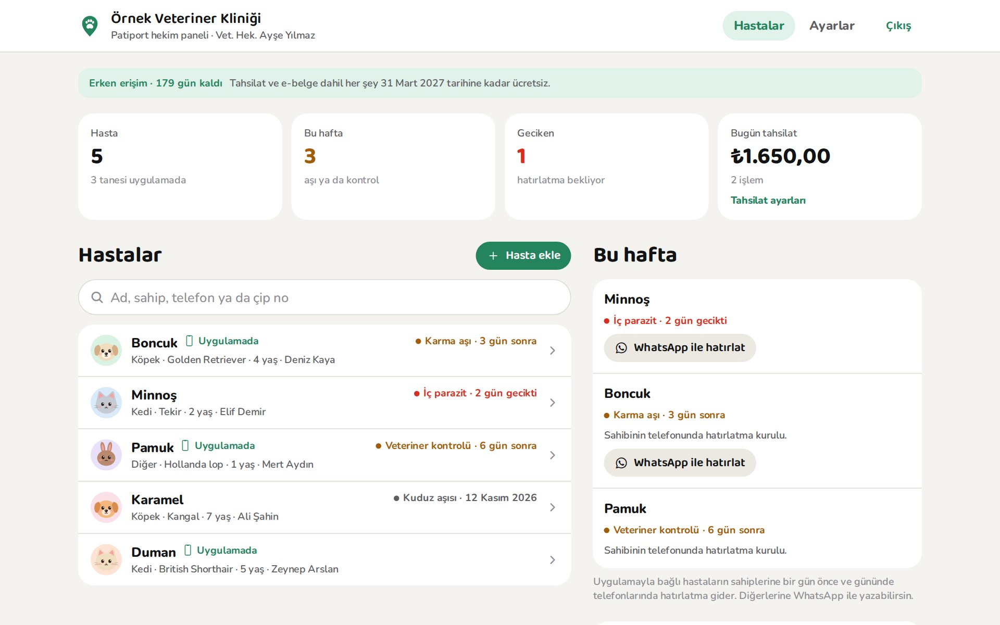
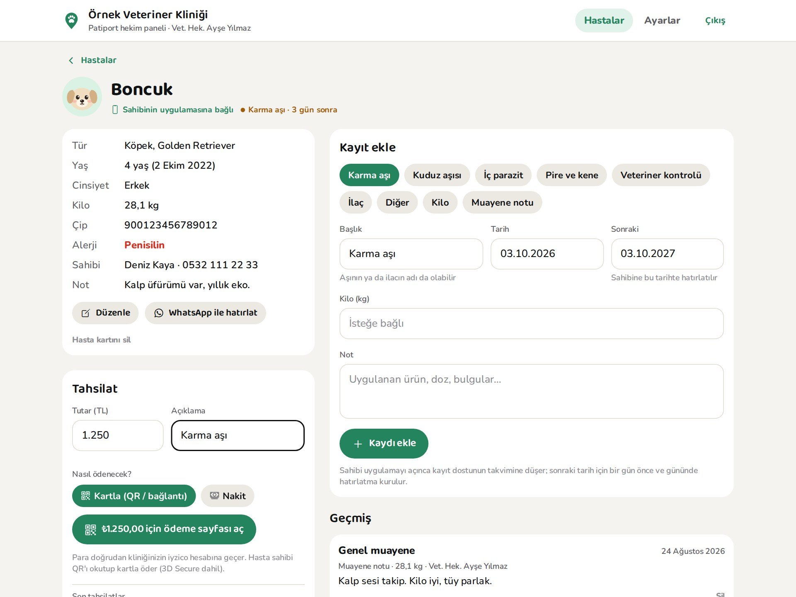

Veteriner hekimler için, ücretsiz
Kaydı siz girin, hatırlatmayı sahibin telefonu yapsın.
Patiport Hekim bir hasta takip paneli. Aşıyı ya da muayeneyi kaydettiğiniz an kayıt hayvanın sahibinin Patiport uygulamasına düşer, sonraki tarih için hatırlatma kendiliğinden kurulur.
- Kurulum yok, tarayıcıdan
- Mevcut programınızın yanında
- Kayıtları yalnızca kliniğiniz görür

Hatırlatmak istedik. Ürün ya da randevu hazır mı?
Bugün zamanı.
Görsellerdeki klinik, hayvanlar ve kişiler örnektir.
Nasıl çalışır
Üç adımda sahibin cebine.
Hasta sahibinin kliniğe özel bir uygulama indirmesi gerekmez; Patiport'u kullanması yeterli.
Başvurun
Kliniğinizi listeden seçin. Verdiğiniz numarayı arayarak doğrularız; onaylanınca paneliniz açılır.
Sahip kodu söyler
Sahip uygulamada "Veterinerime bağla"ya dokunur ve 6 haneli kodu söyler. Hasta kartı adı, türü, yaşı, kilosu, çipi ve alerjileriyle dolu gelir.
Kaydı girin
Aşı, parazit, kontrol, ilaç, kilo ya da not. Kayıt sahibin takvimine düşer; sonraki tarih için bir gün önce ve gününde hatırlatma kurulur.
Özellikler
Muayenehanenin günlük işi için sade bir panel.
Bilgisayarda iki sütun, telefonda tek sütun. Öğrenmesi birkaç dakika.
Hasta kartı ve geçmiş
Tür, ırk, yaş, kilo, çip, alerji ve sahibin iletişimi. Her kayıt tarihiyle geçmişte durur.
Sonraki tarih önerisi
Kayıt türüne göre sonraki aşı ya da kontrol tarihi önerilir; isterseniz değiştirirsiniz.
Bu hafta listesi
Gecikenler kırmızı, önümüzdeki 7 gün sarı. Özet kartlarında hasta, gecikme ve günün tahsilatı bir bakışta.
Sahibin telefonuna kendiliğinden
Kodla bağlanan hastalarda kayıt, sahibin bakım takvimine ve kilo geçmişine işlenir; hatırlatmayı telefon yapar.
WhatsApp ile hatırlatma
Uygulamayı kullanmayan sahiplere tek tıkla, hayvanın adı ve aşısıyla hazır mesaj.
Onaylı klinik profili
Patiport'ta klinik arayan sahipler sizi doğru telefon ve saatlerle, "Klinik onaylı" olarak görür. Sıralama satın alınamaz.

- Tek ekranda her şeyBilgiler solda, kayıt ekleme ve geçmiş sağda. Aşıyı kaydetmek ve tahsilatı almak aynı sayfada.
- Alerji uyarısı göz önündeKayıtlı alerji hasta kartında kırmızıyla durur.
- Sahibe ne gittiğini bilirsinizHasta sahibin uygulamasına bağlıysa kartta yazar; değilse WhatsApp düğmesi hazırdır.
Tahsilat
Kartla ya da nakit; makbuz kendiliğinden.
Kendi iyzico hesabınızı bağlayın: hasta sahibi QR'ı telefonuyla okutup kartla öder, para doğrudan hesabınıza geçer. POS cihazı gerekmez.
- Hasta kartında tutarı yazın, "Kartla" ya da "Nakit"i seçin.
- Kartla ödemede hasta sahibi QR'ı okutur, iyzico'nun güvenli sayfasında 3D Secure ile öder.
- Sonuç panele anında düşer. Paraşüt bağlıysa e-SMM ya da e-Arşiv kendiliğinden kesilir.
Kartla ödeme için bir iyzico üye işyeri hesabı gerekir; nakit tahsilat için gerekmez. Anahtarlarınız şifrelenip yalnızca ödeme sunucusunda saklanır. Paraşüt bağlantısı kısa süre içinde açılıyor.
Tahsilat
KartlaNeden Patiport
Sahip zaten kullandığı uygulamada görür.
Klinik programlarının hasta sahibi uygulamaları o kliniğe özeldir; sahip her veteriner için ayrı uygulama indirmez. Patiport sahibin kendi uygulaması.
Kliniğe özel uygulama
- Sahibin o klinik için ayrıca indirmesi gerekir
- Yalnızca o kliniğin kayıtları
- Acil bir durumda açık veteriner aramaya yaramaz
Patiport
- Sahibin kendi uygulaması; bağlanmak için 6 haneli kod yeterli
- Aşı takvimi, kilo geçmişi ve sağlık kartı bir arada
- Acilde yakındaki açık veterineri bulur; onaylı kliniğiniz doğru bilgilerle görünür
Yol haritası
Sırayı başvuran klinikler belirliyor.
Panelde dört soruluk kısa bir anket var; hangi cihaz ve programla başlayacağımızı cevaplar belirliyor.
Şimdi
- Hasta kartları ve kayıtlar
- Sahibin uygulamasına kayıt ve hatırlatma
- WhatsApp ile hatırlatma
- Onaylı klinik profili
- Kartla (kendi iyzico hesabınız) ve nakit tahsilat
Sırada
- Paraşüt ile e-SMM / e-Arşiv: tahsilattan sonra belge kendiliğinden kesilir
- Yazarkasa POS bağlantısı: tutar kliniğinizdeki cihaza gider
Planlanıyor
- Randevu: sahip Patiport'tan ister, siz panelden onaylarsınız
- Toplu hatırlatma: aşısı yaklaşan hastaların sahiplerine toplu mesaj
Fiyat
Hasta takibi her zaman ücretsiz.
Erken erişimdesiniz: tahsilat ve e-belge dahil her şey 31 Mart 2027'ye kadar ücretsiz.
Her zaman. Onaylanan klinikler için.
- Hasta kartları ve kayıtlar
- Sahibin uygulamasına kayıt ve hatırlatma
- WhatsApp ile hatırlatma
- Onaylı klinik profili
31 Mart 2027'ye kadar.
- Kartla ödeme: hasta sahibi QR'ı okutur, para kendi iyzico hesabınıza geçer
- Nakit tahsilat ve makbuz
- Paraşüt ile e-SMM ya da e-Arşiv, kendiliğinden
- iyzico komisyonu iyzico ile aranızda
Hazır olduğunda fiyatı önceden duyurulacak.
- Kliniğinizdeki cihaza bağlantı
- Toplu hatırlatma mesajı
Kurucu klinik. Erken erişimde panele katılan ilk 50 kliniğin fiyatı, ücretli paket geldiğinde 31 Mart 2029'a kadar sabit kalır. Sıranızı panelde görürsünüz.
Sözümüz. Fiyat en az 30 gün önce duyurulur. Ücretli pakete geçmeyen klinik ücretsiz pakette kalır; kayıtları silinmez.
Sık sorulanlar
Aklınıza takılanlar
Kayıtları kim görür?
Hasta kartlarını ve kayıtları yalnızca kliniğinizin onaylı hekim hesapları görür. Kodla bağlanan hastalarda hayvanın sahibi de kendi dostunun kayıtlarını görür. Başka klinikler göremez. Ayrıntılar gizlilik politikasında.
Sahip Patiport kullanmıyorsa?
Hastayı elle eklersiniz. Aşısı yaklaşınca hazır mesajla WhatsApp'tan hatırlatırsınız.
Mevcut programımı bırakmam gerekir mi?
Hayır. Patiport Hekim'i hatırlatma ve sahiple bağlantı için yanında kullanabilirsiniz.
Kliniği nasıl doğruluyorsunuz?
Başvuruda verdiğiniz numarayı arayarak. Doğrulama telefonu uygulamada gösterilmez.
Kartla tahsilata nasıl başlarım?
Panelde Ayarlar'a girip iyzico üye işyeri hesabınızın API anahtarlarını bağlayın. Sonra hasta kartında tutarı yazıp "Kartla"yı seçin; hasta sahibi QR'ı telefonuyla okutup öder, sonuç hasta kartında kendiliğinden görünür. iyzico hesabınız yoksa iyzico'nun sitesinden üye işyeri başvurusu yapabilirsiniz. Nakit tahsilat için hesap gerekmez.
Para kimin hesabına geçiyor?
Doğrudan sizin iyzico hesabınıza; Patiport paraya dokunmaz. e-SMM ve e-Arşiv için Paraşüt bağlantısı kısa süre içinde açılıyor; bağlandığında nakit ve kartla tahsilatlarda belge kendiliğinden kesilir.
iyzico anahtarlarım güvende mi?
Anahtarlar şifrelenip yalnızca ödeme sunucusunda saklanır; panelde, tarayıcıda ya da hasta sahibinin telefonunda görünmez. Bağlantıyı istediğiniz an Ayarlar'dan kaldırabilirsiniz.
Ücretli olacak mı?
Hasta takibi her zaman ücretsiz. Tahsilat ve e-belge 31 Mart 2027'ye kadar ücretsiz; sonrası için ücretli bir paket gelecek. Fiyat en az 30 gün önce duyurulur. Geçmezseniz ücretsiz pakette kalırsınız, kayıtlarınız silinmez. Erken erişimde katılan ilk 50 kliniğin fiyatı 31 Mart 2029'a kadar sabit kalır.
Telefonda da çalışır mı?
Evet, tarayıcıdan açılır. Bilgisayarda iki sütunlu, daha rahat bir görünümü var.
Kliniğinizle katılın
Başvuru birkaç dakika sürer. Onaylanınca aynı e-posta ve şifreyle panele girersiniz.